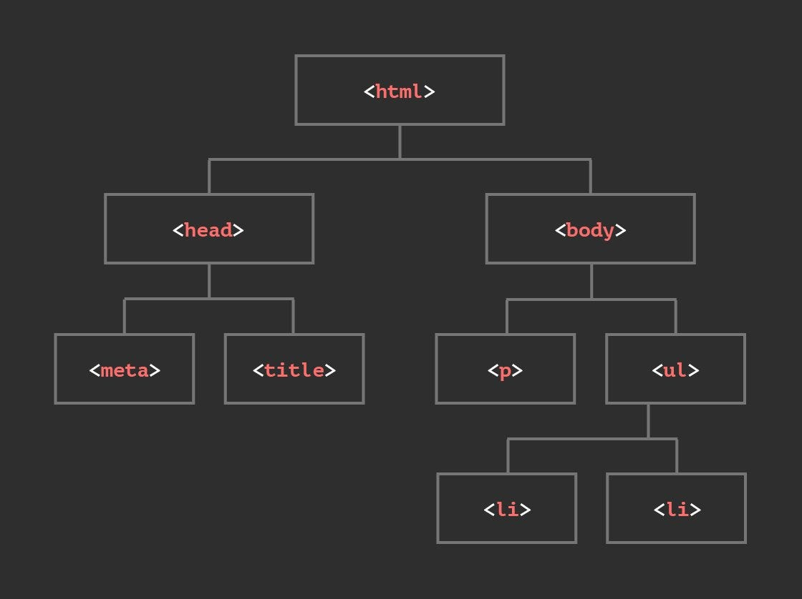

¿Que es el DOM?
Es una API (Application Programing Interface) que representa el documento (HTML, XML o SVG)
de nuestra pagina por los que nos permite modificar la estructura y el estilo de la
misma dinamicamente. Cuando el navegador analiza el documento HTML construye una arbol
que lo representa y sera utilizado para renderizar la pagina, un ejemplo del arbol
del DOM seria el siguiente:

Cada rama de este arbol termina en un nodo que tiene dentro un objeto (como una etiqueta HTML)
que puede ser accedido y modificado con un lenguaje de scripting como JavaScript o Python.
En codigo HTML este arbol se veria asi:
<!DOCTYPE html>
<html>
<head>
<meta charset="UTF-8">
<title>Mi pagina</title>
</head>
<body>
<p>Parrafo</p>
<lu>
<!--Al ser hijos del elemento lu los elementos li estan mas abajos en el arbol-->
<li>Elemento 1</li>
<li>Elemento 2</li>
</lu>
</body>
</html>
DOM y Javascript
Mediante lenguajes como Python, Ruby o PHP podemos acceder y manipular al DOM pero
en este caso utilizaremos JavaScript para ejemplificar el uso de esta API.
Obtener referencia
Esto nos permitira modificar distintos elementos en nuestro documento HTML, para hacer
esto existen distintos metodos para obtener acceso a elementos HTML o selectores de CSS
entre estos encontramos:
getElementById()
Es un metodo que nos permite acceder a etiquetas HTML mediante su atributo ID unico.
Guardaremos la referencia en una variable (ya sea let,
var o const).
<body>
<h1 id="tituloRecetas">Pagina de Recetas</h1>
<script>
const titulo = document.getElementById("tituloRecetas")
</script>
</body>
En este ejemplo obtenemos la etiqueta <h1> mediante
su id "tituloRecetas" y la almacenamos en una variable llamada titulo.
getElementsByClassName()
Es un metodo que nos permite capturar distintos elementos HTML que compartan una
misma clase, con la particularidad que no lo regresa como una variable o un arreglo sino
como un HTMLCollection vivo.
<body>
<p class="parrafosCanciones">Easier to Run - Linkin Park</p>
<p class="parrafosCanciones">Doll - Foo Fighters</p>
<p class="parrafosCanciones">Spoken For - FLAVOR FOLEY</p>
<script>
const misCanciones = document.getElementByClassName("parrafosCanciones")
</script>
</body>
En este ejemplo seleccionamos los elementos <p>
con la clase "parrafosCanciones" que son almacenadas en el HTMLCollection misCanciones.
getElementsByTagName()
Este metodo obtiene los elementos HTML mediante su tipo de etiqueta y regresa un
HTMLCollection vivo.
<body>
<p>Lionel Messi</p>
<p>Cristiano Ronaldo</p>
<p>Bruno Fernandes</p>
<script>
const pFutbolistas = document.getElementByTagName("p")
</script>
</body>
En este caso obtenemos los elementos <p>
que son guardados en el HTMLCollection pFutbolistas.
getElementsByName()
Este metodo obtiene los elementos HTML mediante su atributo name
y devuelve un NodeList. Es muy util para acceder a elementos de formularios.
<body>
<form>
<input type="radio" name="genero" value="masculino"> Masculino
<input type="radio" name="genero" value="femenino"> Femenino
<input type="radio" name="genero" value="otro"> Otro
</form>
<script>
const generos = document.getElementsByName("genero")
</script>
</body>
En este caso obtenemos todos los elementos con el atributo name="genero"
que son guardados en el NodeList generos, permitiendo iterar sobre ellos para saber cual esta seleccionado.
querySelector()
Es un metodo que nos permite acceder a un elemento HTML mediante un selector de CSS,
devolviendo unicamente la primera coincidencia que encuentre en el documento.
<body>
<ul id="listaCompras">
<li class="producto">Manzanas</li>
<li class="producto">Pan</li>
<li class="producto">Leche</li>
</ul>
<script>
const primerProducto = document.querySelector(".producto")
</script>
</body>
En este ejemplo seleccionamos el primer elemento con la clase "producto"
(Manzanas) y lo almacenamos en la variable primerProducto. Tambien podemos usar
selectores mas especificos como "#listaCompras .producto".
querySelectorAll()
Este metodo funciona igual que querySelector() pero
devuelve todas las coincidencias en un NodeList en lugar de solo la primera.
<body>
<ul id="listaCompras">
<li class="producto">Manzanas</li>
<li class="producto">Pan</li>
<li class="producto">Leche</li>
</ul>
<script>
const todosLosProductos = document.querySelectorAll(".producto")
</script>
</body>
A diferencia de getElementsByClassName(),
querySelectorAll() devuelve un NodeList estatico
y no una HTMLCollection viva, y permite usar cualquier selector de CSS.
Insertar, eliminar y modificar HTML
Ahora que sabemos como obtener la referencia a un elemento podemos modificar su contenido,
crear nuevas etiquetas, eliminar etiquetas, manipular sus atributos, etc. Estos son algunos metodos y
propiedades para hacerlo:
innerHTML
Es una propiedad que permite obtener o asignar contenido HTML dentro de un elemento.
Al asignar, el string se parsea como HTML, por lo que puede crear nuevas etiquetas hijas.
<body>
<div id="contenedor"></div>
<script>
const contenedor = document.getElementById("contenedor")
contenedor.innerHTML = "<h2>Bienvenido</h2><p>Este es un parrafo</p>"
</script>
</body>
En este ejemplo insertamos un <h2> y un
<p> dentro del div
contenedor. El contenido previo se reemplaza por completo.
textContent
Esta propiedad permite obtener o asignar solo el texto de un elemento, ignorando
cualquier etiqueta HTML. Es mas seguro que innerHTML
para evitar inyeccion de codigo.
<body>
<p id="mensaje">Hola Mundo</p>
<script>
const mensaje = document.getElementById("mensaje");
mensaje.textContent = "Texto actualizado";
</script>
</body>
Aqui cambiamos el texto del parrafo por "Texto actualizado". Si asignamos un string
con etiquetas HTML, estas se mostraran como texto literal sin interpretarse.
createElement() y appendChild()
Con createElement() creamos una nueva etiqueta HTML,
y con appendChild() la agregamos como hija de un elemento
existente en el DOM.
<body>
<ul id="lista"></ul>
<script>
const lista = document.getElementById("lista");
const nuevoItem = document.createElement("li");
nuevoItem.textContent = "Elemento nuevo";
lista.appendChild(nuevoItem);
</script>
</body>
Primero creamos un elemento <li>, le asignamos
texto con textContent y finalmente lo agregamos como
hijo de la lista con appendChild().
remove()
Este metodo puede eliminar un elemento HTML, ademas no retorna nada.
<body>
<p id="nombre">Manuel</p>
<script>
const nombre = document.getElementById("nombre");
nombre.remove();
</script>
</body>
En este ejemplo removemos el elemento <p> el ID nombre
removeChild()
Con este metodo podemos eliminar el nodo (elemento) hijo de un nodo padre y a diferencia de
remove() este si regresa el elemento eliminado.
<body>
<ul id="padre">
<li id="hijo">Juan Carlos</li>
</ul>
<script>
const padre = document.getElementById("padre");
const hijo = document.getElementById("hijo");
const removido = padre.removeChild(hijo);
</script>
</body>
En este ejemplo removemos el nodo hijo de su nodo padre y lo almacenamos en un objeto llamado "removido".
Manipulación de atributos
setAttribute()
Este metodo permite asignar o modificar un atributo a un elemento HTML. Recibe el
nombre del atributo y el valor que se le quiere dar.
<body>
<img id="logo" src="default.png">
<script>
const logo = document.getElementById("logo")
logo.setAttribute("src", "nuevo-logo.png")
logo.setAttribute("alt", "Logo actualizado")
</script>
</body>
En este ejemplo cambiamos la imagen cambiando su atributo src
y agregamos un alt descriptivo usando
setAttribute().
removeAttribute()
Este metodo elimina un atributo de un elemento HTML. Recibe el nombre del atributo
que se quiere eliminar. Si el atributo no existe, no hace nada.
<body>
<img id="logo" src="default.png" alt="Logo antiguo">
<script>
const logo = document.getElementById("logo")
logo.removeAttribute("alt")
</script>
</body>
En este ejemplo eliminamos el atributo alt de la imagen
usando removeAttribute(). El atributo
src permanece intacto.
Manipulación de estilos CSS
Tambien podemos modificar los estilos de un elemento desde JavaScript, ya sea
asignando propiedades directas con style, escribiendo
CSS inline completo, o leyendo los estilos finales que el navegador calculo.
style
La propiedad style permite acceder o modificar los estilos
inline de un elemento. Las propiedades CSS se escriben en camelCase en lugar de kebab-case.
<body>
<p id="texto">Hola Mundo</p>
<script>
const texto = document.getElementById("texto")
texto.style.color = "#0ceca5"
texto.style.fontSize = "24px"
texto.style.backgroundColor = "#303030"
</script>
</body>
Las propiedades como background-color se escriben como
backgroundColor (sin guion y la siguiente palabra en mayuscula).
El valor siempre se pasa como string.
style.cssText
Permite asignar varios estilos de una sola vez usando la sintaxis CSS normal (kebab-case).
Sobrescribe todos los estilos inline previos del elemento.
<body>
<p id="texto">Hola Mundo</p>
<script>
const texto = document.getElementById("texto")
texto.style.cssText = "color: #0ceca5; font-size: 24px; background: #303030; padding: 10px; border-radius: 5px;"
</script>
</body>
Es util cuando necesitas aplicar varios estilos a la vez sin tener que asignarlos uno por uno.
A diferencia de style, aca se usa la sintaxis normal de CSS
con guiones.
getComputedStyle()
Es una funcion que devuelve el valor real de una propiedad CSS de un elemento,
incluyendo los estilos heredados de clases (no solo los inline). Es de solo lectura.
<body>
<style>
.caja { color: #0ceca5; font-size: 20px; }
</style>
<div id="caja" class="caja">Texto de ejemplo</div>
<script>
const caja = document.getElementById("caja")
const color = getComputedStyle(caja).color
console.log(color) // rgb(12, 236, 165)
</script>
</body>
A diferencia de style que solo lee estilos inline,
getComputedStyle() devuelve el estilo final que el navegador
renderiza (clases CSS + inline combinados).
classList
Es una propiedad de los elementos DOM que permite manipular las clases CSS
de forma sencilla. Devuelve un DOMTokenList vivo
con métodos como add(),
remove(),
toggle(),
contains() y
replace().
<body>
<style>
.destacado { background-color: #0ceca5; color: #000; padding: 10px; }
.oculto { display: none; }
.borde { border: 3px solid #ff8c00; }
</style>
<div id="caja">Hola Mundo</div>
<button id="btnToggle">Toggle clase</button>
<script>
const caja = document.getElementById("caja")
// Agrega una clase
caja.classList.add("destacado");
// Verifica si tiene una clase
if (caja.classList.contains("destacado")) {
console.log("Tiene la clase destacado");
}
// Alterna una clase (si existe la quita, si no la agrega)
document.getElementById("btnToggle").addEventListener("click", () => {
caja.classList.toggle("borde");
});
// Reemplaza una clase por otra
caja.classList.replace("destacado", "oculto");
// Elimina una clase
caja.classList.remove("oculto");
</script>
</body>
A diferencia de className que trabaja con cadenas
de texto y requiere parsear o reconstruir la cadena entera de clases,
classList ofrece metodos dedicados que son mas
semanticos, seguros y eficientes. Cada metodo modifica solo la clase indicada sin
afectar las demas clases del elemento.
addEventListener()
Aunque tengamos todos estos metodos y atributos que nos permiten modificar el HTML como queramos
desde nuestro lenguaje de scripting, donde realmente se saca partido de esta herramienta es mediante
addEventListener().
Este es un metodo que poseé todas las variables u objetos que almacenen una referencia a un elemento
HTML que sirve para escuchar y reaccionar a acciones que el usuario realiza sobre ese elemento en especifico,
como por ejemplo: un click, enviar un formulario, presionar una tecla, etc.
Sintaxis
elemento.addEventListener(evento, funcion, opciones);
elemento: El objeto HTML que quieres vigilar (un botón, un formulario,
una imagen, o incluso toda la página).
evento: Un texto que define qué estamos esperando que pase, ejemplo: "click",
"keyup", "submit". Va siempre entre comillas.
funcion: El bloque de código (ya sea una función o una función anonima)
que se ejecutará en cuando ocurra el evento. A esta funcion se le puede dar un parametro con el nombre que queramos,
(normalmente "e" o event) este se convertira en un objeto evento que tendra distintos metodos y atributos que
nos permitira cambiar el comportamiento del evento o obtener información del mismo, dependiendo del
tipo de evento. Ejemplo:
document.addEventListener("keyup", (event) => {
console.log(event.key) // Imprime la letra que se esta presionando
})
opciones (Opcional): Un objeto para configurar detalles avanzados
(como si el evento se debe ejecutar solo una vez).
Eventos
Los eventos son acciones que ocurren en la pagina, como mover el mouse, hacer clic
o presionar una tecla. Con addEventListener() podemos
escuchar esos eventos y ejecutar codigo cuando ocurran.
Mouse
mouseenter: Se dispara cuando el cursor del mouse entra en la zona del elemento.
mouseleave: Se dispara cuando el cursor del mouse sale del elemento.
click: Se dispara al presionar y soltar el click izquierdo del mouse sobre el elemento.
dblclick: Se dispara al hacer doble click sobre el elemento.
Ejemplo:
<div id="foco">Foco</div>
<p id="estado">Apagado</p>
<script>
// Obtenemos la referencia a los elementos mediante su ID
let f = document.getElementById("foco");
let e = document.getElementById("estado");
// El mouse entra al espacio del elemento
f.addEventListener("mouseenter", () => {
f.style.background = "#ffe066";
f.style.boxShadow = "0 0 30px #ffe066";
e.textContent = "Iluminando...";
});
// El mouse sale del espacio del elemento
f.addEventListener("mouseleave", () => {
f.style.background = "#444";
f.style.boxShadow = "none";
e.textContent = "Apagado";
});
// Usuario hace click
f.addEventListener("click", () => {
f.style.background = "#ff8c00";
f.style.boxShadow = "0 0 40px #ff8c00";
e.textContent = "Luz maxima";
});
// Usuario hace doble click
f.addEventListener("dblclick", () => {
f.style.background = "#444";
f.style.boxShadow = "none";
e.textContent = "Fundido";
});
</script>
En este tenemos un foco que cambia de color segun que hacemos con el mouse, utilizamos los cuatro
eventos que mencionamos para cambiar el estilo del elemento f (el foco),
mas exactamente el color del fondo y la sombra del mismo y el contenido del texto de e que indica el estado del foco
(Iluminado, Apagado, Luz Maxima o Fundido)
Teclado
Esto dos metodos tienen la particularidad de que no estan ligados a ningun elemento del HTML, es
decir no necesitamos obtener la referencia a un <button> por
ejemplo ya que escucha si se ha presionado una tecla en toda la pagina en general.
Ejemplo:
<div id="a" class="led">A</div>
<div id="s" class="led">S</div>
<div id="d" class="led">D</div>
<div id="f" class="led">F</div>
<script>
// Escucha cuando se presiona una tecla en toda la pagina
document.addEventListener("keydown", (e) => {
// Cuando la tecla presionada coincida con el id de uno de los led obtendremoos su referencia
let led = document.getElementById(e.key.toLowerCase());
if (led) led.classList.add("activo");
});
// Escucha que se haya soltado una tecla en toda la pagina
document.addEventListener("keyup", (e) => {
let led = document.getElementById(e.key.toLowerCase());
if (led) led.classList.remove("activo");
});
</script>
En este ejemplo escuchamos los eventos keyup y
keydown, el objeto e que
es un parametro de la funcion flecha que tiene un atributo key
que nos dice cual tecla se esta presionando o dejando de presionar dependiendo del evento y
toLowerCase() convierte el valor de este atributo a minuscula.
Por ultimo, si la tecla presionada coincide con uno de los ID de los led toma su referencia y
le agrega o quita la clase "activo" cambiando su estilo.
Los formularios tambien tienen eventos propios que nos permiten reaccionar a las
acciones del usuario sobre los campos de entrada.
change: Se dispara cuando el valor de un elemento de formulario
cambia (input, select, textarea). En los <input> se dispara al perder
el foco si hubo cambios, en los <select> se dispara al seleccionar
una opcion.
submit: Se dispara cuando se envia un formulario, ya sea
presionando un boton con type="submit" o presionando Enter dentro
de un campo. Es comun usar preventDefault() para evitar que la pagina
se recargue.
Ejemplo: un selector de color con vista previa y boton para guardar:
<select id="color">
<option value="#444">Ninguno</option>
<option value="#ff4444">Rojo</option>
<option value="#0ceca5">Verde</option>
<option value="#4488ff">Azul</option>
</select>
<div id="vista">Vista previa</div>
<form id="form-color">
<button>Guardar</button>
</form>
<p id="estado">Selecciona un color</p>
<script>
let s = document.getElementById("color");
let v = document.getElementById("vista");
let f = document.getElementById("form-color");
let estado = document.getElemenFocotById("estado");
// Se ejecuta al cambiar la seleccion del <select>
s.addEventListener("change", () => {
v.style.background = s.value;
estado.textContent = "Color seleccionado";
});
// Se ejecuta al enviar el formulario
f.addEventListener("submit", (e) => {
e.preventDefault(); // Evita recargar la pagina
estado.textContent = "Guardado!";
});
</script>
En este ejemplo usamos el evento change para detectar cuando el usuario
selecciona un color del <select>, actualizando el fondo del div
vista con el color elegido. Luego, el evento submit
del formulario captura cuando se presiona el boton "Guardar", usando
preventDefault() para evitar que la pagina se recargue y mostrando un mensaje
de confirmacion.
Programas de la evaluación
(Enlaces de descarga de los programas de los integrantes del grupo)